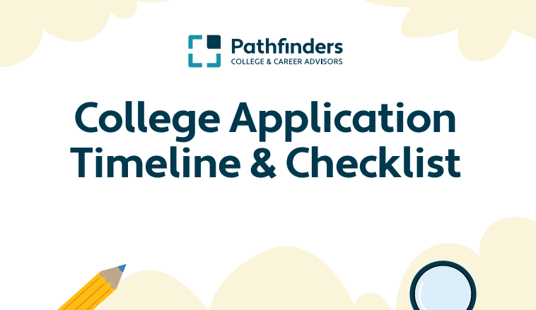

The college interview is one of the most personal — and most misunderstood — parts of the admissions process. For many students, it feels like a test with no answer key. But here is the truth: colleges are not looking for a perfect, rehearsed performance. They want to meet the real person behind the application.
At Pathfinders College & Career Advisors, we help students and families prepare for every stage of the college journey, including the interview. This guide walks through the 15 most common college interview questions, explains what admissions teams are really listening for, and gives you practical strategies to answer with confidence.
What Colleges Are Really Evaluating
Before diving into the questions, it helps to understand the three signals every interviewer is listening for, regardless of the question:
- Intellectual curiosity: Do you engage with ideas beyond what is required?
- Self-awareness: Can you articulate who you are and what you have learned from hard experiences?
- Authenticity: Do your answers feel real and specific, or rehearsed and generic?
The Top 15 College Interview Questions (and How to Answer Them)
1. Tell me about yourself.
This is almost always the opening question, and the one students handle the worst. The two most common mistakes are reciting a resume bullet-point by bullet-point or giving a vague answer that could describe anyone.
Strategy: Use a three-part structure: The Thread (one or two sentences that capture a central theme about you), The Evidence (two or three specific examples that illustrate that theme), and The Bridge (a sentence about where you are headed and why this school fits that path).
Example: “I have always been most alive when I am solving problems that feel too big to solve. In ninth grade, that looked like building a robotics team from scratch at my school. By junior year, it meant leading a community food-waste initiative. I am drawn to [College Name] because of its emphasis on interdisciplinary thinking.”
2. Why do you want to attend this school?
Generic answers do the most damage here. Saying “you have a great reputation” signals that you have not done real research, or that this school is not actually a priority.
Strategy: Name specific programs, professors, courses, or opportunities that align directly with your interests. Make the connection personal.
3. What is your greatest strength?
Strategy: Pick one specific strength and back it up with a concrete example. Let the story do the work — avoid vague traits like “I am a hard worker” without supporting evidence.
Example: “My greatest strength is persistence. Last year, our robotics team hit a major design failure three weeks before the competition. Instead of pivoting to an easier solution, I mapped out each failure point, proposed a redesign, and we ended up placing second in the state.”
4. What is your greatest weakness?
Interviewers have heard “I am a perfectionist” more times than they can count. That answer reads as a deflection, not genuine self-reflection.
Strategy: Share a real weakness, then describe the concrete steps you have taken to address it. Show growth, not perfection.
5. Describe a challenge you have overcome.
Strategy: Choose a challenge that taught you something meaningful. Focus less on the hardship itself and more on the specific actions you took and what changed in you as a result.

6. Tell me about a book, article, or idea that has impacted you.
This question probes your intellectual life outside the classroom. It separates students who read for growth from those who read only when assigned.
Strategy: Choose something authentic, not the most impressive-sounding title. Explain why it affected your thinking and how it changed how you see something.
7. What do you do outside of school?
Strategy: Depth over breadth. Instead of listing every activity, pick one or two and describe them with energy and detail. Explain what you have learned or built through that involvement.
8. Where do you see yourself in ten years?
Strategy: You are not expected to have a rigid plan. Show that you have thought about your interests and how college connects to them. Curiosity and direction matter more than certainty.
9. How would your friends describe you?
Strategy: Be specific and grounded. Give a trait your friends would actually use, backed by a real example — not adjectives that sound like a LinkedIn profile.
10. Tell me about a time you failed.
Strategy: Pick a real failure, not a humble-brag. What matters is the reflection afterward: what did you actually learn, and how did it change your behavior?
Example: “I ran for student government president junior year and lost. When I looked honestly at the campaign, I realized I had relied on my existing friendships instead of listening to what students outside my circle cared about. The experience made me a better leader than winning would have.”
11. What is a current event or issue you care about?
Strategy: Pick an issue you genuinely follow and can speak about with some depth. Show that you understand multiple dimensions of it and connect it to your broader interests.
12. Is there anything in your application you want to explain or expand on?
Strategy: This is an opportunity, not a trap. If there is a dip in grades, a gap in activities, or something you could not fully explain in your essays, address it directly and briefly — then pivot to where you are now.
13. What questions do you have for me?
This is not a formality — it is part of the evaluation. Prepare three or four specific questions in advance. Avoid anything easily answered by the school website.
- “What surprised you most about [College] once you arrived?”
- “What do students who thrive here tend to have in common?”
- “Is there a course or experience that most shaped your time here?”
14. How do you handle stress or pressure?
Strategy: Give a real answer. Describe an actual approach you use — such as time management, physical activity, or asking for help — and illustrate it with a specific moment. Avoid platitudes like “I just stay positive.”
15. Why do you want to study [your intended major]?
Strategy: Connect your major to a real experience or insight — not just “I have always been interested in it.” Show the moment your interest sharpened, the question you want to answer, or the problem you want to help solve.
How to Prepare Without Sounding Rehearsed
The goal of preparation is not to memorize answers — it is to get comfortable with your own story. Here is how to practice effectively:
- Record yourself on video answering five to seven questions. Watch it back. Notice where you sound flat, rushed, or vague.
- Practice with a parent, teacher, or counselor who will give you honest feedback.
- Do at least one timed mock interview. Most college interviews run 20 to 40 minutes.
- Prepare three to five specific stories you can adapt to multiple questions: a challenge you overcame, a project you led, a moment of growth, something you failed at and learned from.
- Research each school thoroughly before the interview. Know the name of a professor whose work interests you, a program that excites you, and a value of the school that resonates with you personally.
Day-of Reminders
- Arrive early (or log on early for virtual interviews). Rushing creates anxiety.
- Dress professionally — a neat, polished appearance signals that you take the opportunity seriously.
- Make eye contact and listen actively. Interviewers notice when a student is waiting for their turn to talk instead of genuinely engaging.
- At the end, thank the interviewer sincerely and express genuine enthusiasm for the school.
Final Thought
The college interview is not about performing a version of yourself that you think admissions officers want to see. It is about showing up as the student you actually are — curious, self-aware, and ready for what comes next.
If you want expert guidance on college interview prep, essay strategy, or building your full college plan, the team at Pathfinders Advisors is here to help. Schedule a complimentary strategy call and take the guesswork out of the college admissions process.
About Pathfinders Advisors
Pathfinders Advisors provides expert college admissions advising, career exploration guidance, and financial planning for education. We serve students and families across the United States through virtual 1:1 coaching and our self-paced College & Career Planning Course.